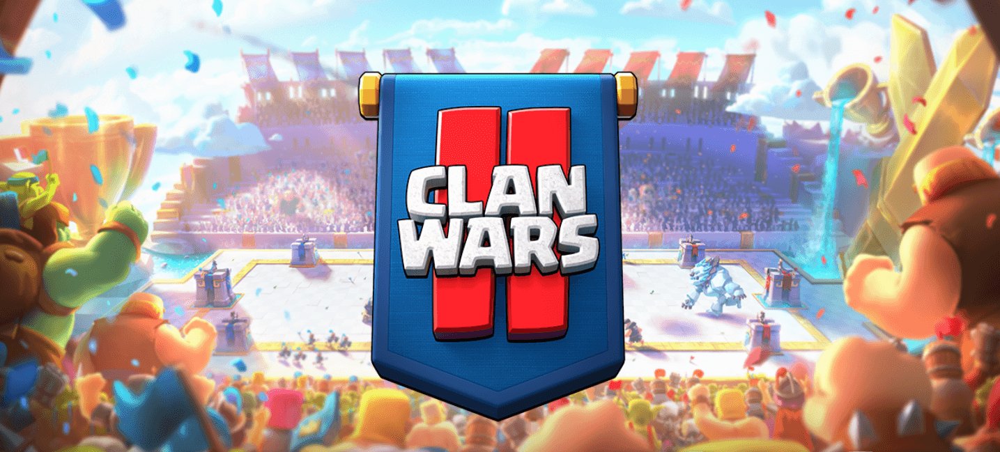
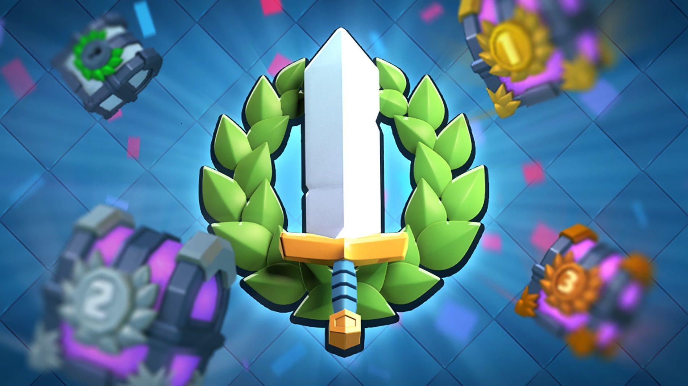
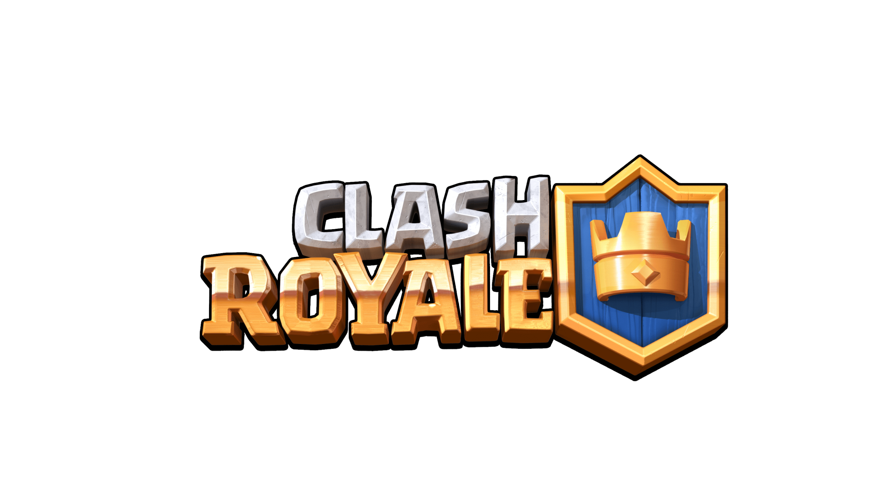

MECÁNICA
La mecánica de Clash Royale es la de un juego de cartas coleccionables en tiempo real. El jugador construye un mazo de cartas con personajes de Clash of Clans y otros personajes nuevos, y compite contra otros jugadores en partidas en vivo. El objetivo es destruir las torres del oponente mientras se defienden las propias torres. Cada carta tiene habilidades y características únicas, y los jugadores pueden desbloquear y mejorar sus cartas a medida que avanzan en el juego. Los jugadores ganan cofres de recompensa que contienen cartas y recursos después de ganar batallas, y también pueden unirse a clanes para donar cartas y participar en batallas de clanes. El juego tiene un sistema de progreso de nivel en el que los jugadores pueden subir de nivel al mejorar sus cartas y ganar puntos de experiencia. También hay una variedad de eventos y desafíos en los que los jugadores pueden participar para ganar recompensas y mejorar sus habilidades en el juego. Además, Clash Royale tiene compras dentro de la aplicación para adquirir cartas adicionales o acelerar el progreso del jugador, pero el juego se puede disfrutar completamente sin gastar dinero real. En resumen, la mecánica de Clash Royale implica construir y mejorar un mazo de cartas, competir en partidas en vivo contra otros jugadores, defender las propias torres y atacar las torres del oponente, ganar cofres de recompensa y mejorar cartas y habilidades.

BENEFICIOS Y RÉCORDS
Clash Royale es otro juego exitoso desarrollado por Supercell que ha obtenido importantes beneficios y récords en su historia. En cuanto a los beneficios, Clash Royale ha sido uno de los juegos móviles más rentables de la industria, generando más de $ 3 mil millones en ingresos desde su lanzamiento en 2016. Además, el juego ha sido una fuente importante de ingresos para Supercell, contribuyendo significativamente a sus ganancias anuales. En cuanto a los récords, Clash Royale ha sido uno de los juegos móviles más descargados en todo el mundo, alcanzando el puesto número uno en la App Store de Apple en múltiples países. En su lanzamiento, se convirtió en el juego móvil más descargado en todo el mundo durante su primera semana. Clash Royale también ha sido un éxito en la industria de los deportes electrónicos, con torneos y competiciones organizados en todo el mundo. En 2018, Clash Royale celebró su primer campeonato mundial, con un premio total de $ 400,000. El juego ha sido elogiado por su innovación y jugabilidad adictiva, y ha sido un gran éxito entre los jugadores de todo el mundo. En resumen, Clash Royale ha sido otro juego exitoso de Supercell, generando importantes beneficios y estableciendo récords en la industria de los juegos móviles. Su éxito se debe en gran medida a su diseño innovador y jugabilidad adictiva, así como a su capacidad para mantener a los jugadores comprometidos durante largos períodos de tiempo.

INFO EXTRA FANDOM.COM
